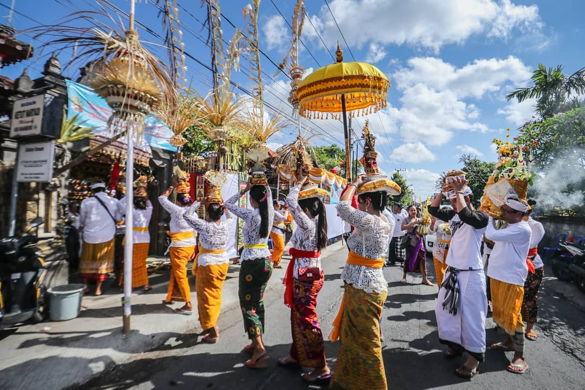
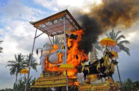

Adat dan tradisi Bali adalah jantung dari kehidupan sehari-hari masyarakatnya, membentuk norma sosial yang unik dan kaya serta mengikat mereka dalam jaringan nilai-nilai yang mendalam. Masyarakat Bali menjunjung tinggi konsep gotong royong, tercermin dalam semangat kebersamaan dalam setiap aspek kehidupan, mulai dari membantu tetangga hingga berpartisipasi dalam upacara adat. Selain itu, prinsip menyama braya menekankan pentingnya menjaga hubungan baik antar umat beragama, menciptakan masyarakat yang rukun dan harmonis. Ritus dan upacara adat, seperti Ngaben, Melasti, Galungan, dan Kuningan, bukan hanya sekadar perayaan keagamaan, tetapi juga momen penting untuk memperkuat ikatan komunitas, menghormati leluhur, dan memelihara keseimbangan spiritual. Norma berpakaian, adat upacara, dan berbagai larangan adat lainnya menjadi pedoman perilaku yang dipatuhi, menjaga tata krama dan menghormati nilai-nilai luhur.
Lebih dari sekadar warisan budaya, adat dan tradisi Bali adalah kompas yang membimbing perilaku masyarakat, menjaga keharmonisan sosial, dan memperkuat kohesi. Tradisi unik seperti menaruh sesaji, mekare-kare, dan nyakan diwang menambah kekayaan budaya Bali, menunjukkan bagaimana seni dan spiritualitas terjalin erat dalam kehidupan sehari-hari. Kepatuhan terhadap aturan adat dan peran tokoh adat menjadi kunci dalam menjaga stabilitas sosial dan menghadapi tantangan zaman. Dengan demikian, adat dan tradisi bukan hanya sekadar identitas, tetapi juga kekuatan yang mendorong masyarakat Bali untuk terus melestarikan warisan leluhur sambil beradaptasi dengan perubahan zaman.
 